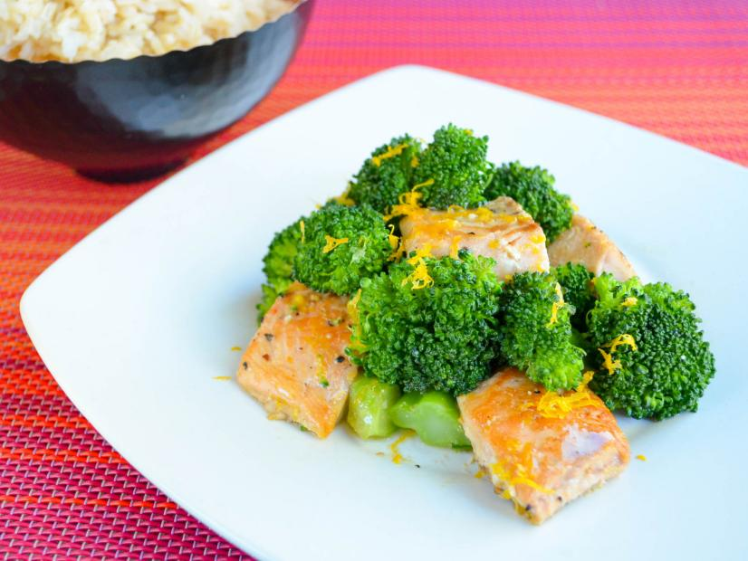

Salmon and Broccoli

Description
A very simple recipe for those who like their salmon as
nature intended.
Ingredients
- Frozen salmon fillets
- Baby new potatoes
- Broccoli frozen florets
- A lemon
Steps
- Place frozen salmon fillets in air fryer at 400F
- Cook from frozen for 16-17 minutes
- Boil potatoes in water for twenty minutes
- Heat broccoli in microwave for 5 minutes
- Squeeze of lemon with slice on side to serve